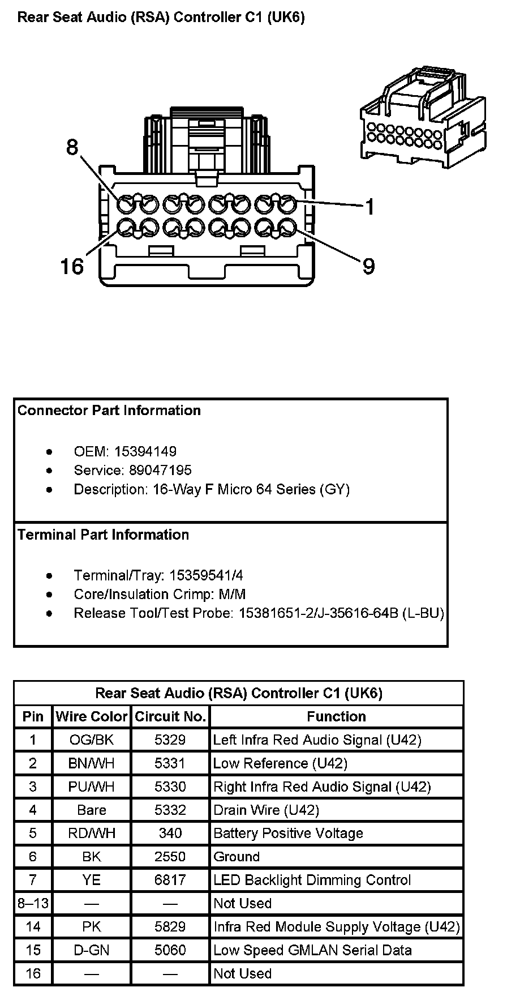
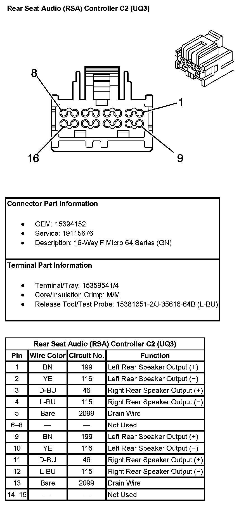
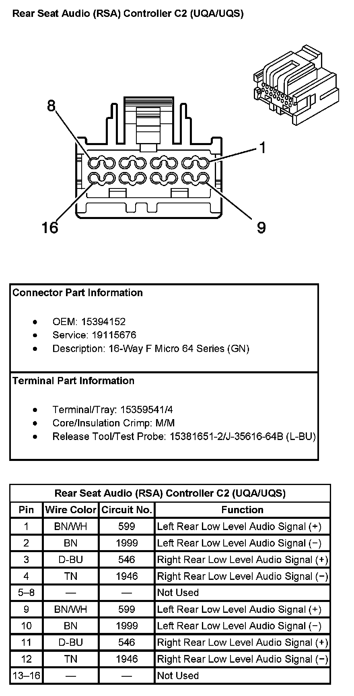

Operation CHARM
: Car repair manuals for everyone.
Home
>>
Cadillac
>>
2007
>>
Escalade ESV AWD V8-6.2L
>>
Repair and Diagnosis
>>
Accessories and Optional Equipment
>>
Radio, Stereo, and Compact Disc
>>
Automatic Volume Control
>>
Diagrams
Automatic Volume Control: Diagrams
Rear Seat Audio (RSA) Controller C1 (With RPO Code UK6):

Rear Seat Audio (RSA) Controller C2 (With RPO Code UQ3):

Rear Seat Audio (RSA) Controller C2 (With RPO Code UQA/UQS):
